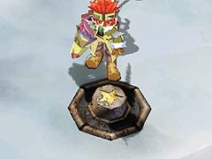
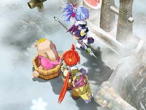

ちなみに、アンチトラップを装備していれば、雪玉にぶつかってもダメージを受けません。

(アンチトラップ)
目次 > ゲームについて > 日本Falcom 攻略 > ZWEI II > ダンジョン一覧 > 吹雪ヶ原 (LV.18)
らんの眼
ZWEI II (ツヴァイ 2、ZWEI II Plus)
| 概要 | 情報 | 攻略チャート |
| フード交換 | ペットについて | ボス戦 |
| 敵キャラ一覧 | ハンターランク | G-コロッセオ |
| アイテム一覧 | ガジェット一覧 | トレジャー一覧 |
| ダンジョン一覧 | クリアデータ特典 | Plusの追加要素 |
| ZWEI II攻略へ | 目次へ戻る |
| 第1 階層 |
| A 地点へ移動すると、敵が出現します。 | |
| B 地点の壷は、ジャンプ攻撃で壊すことができます。 | |
| C 地点の巨大な雪玉を攻撃すると、C' 地点をぐるぐると回り始めます。 ちなみに、アンチトラップを装備していれば、雪玉にぶつかってもダメージを受けません。 (アンチトラップ) |
|
| D 地点の風船を割ると、D' 地点の扉が開きます。 | |
| E 地点の穴は「グラインドギア」に乗れば通過できます。 |
| 第2 階層 |
| A 地点へ移動すると、A' 地点に桶のソリに乗った「こぼるてす」が出現し、風に吹かれてB 地点の穴まで運ばれていきます。 ここで、「こぼるてす」がA 地点を通過する前に、A 地点の橋脚に付けられた足場を攻撃し、下に落とすことにより、「こぼるてす」をB 地点の穴に落とさないようにできます。 |
|
 |
C 地点のジャンプ台に乗ると、C' 地点へ移動できます。 |
|
D 地点のジャンプ台に乗ると、C 地点へ移動できます。 |
|  | E 地点のスイッチを押すと、E' 地点の扉が開きます。 |
|  | A 地点にある足場を落とし、「こぼるてす」を助けると、「こぼるてす」が主人公に付いてくるようになります。この状態で「こぼるてす」をF 地点へ連れて行くと、F 地点の扉が開きます。 |
| 第3 階層 |
| A の青丸から伸びる矢印が指す提灯を壊すと、敵が出現します。 | |
 |
B 地点の扉をくぐって、C 地点の部屋に一定時間いると、B 地点の扉が閉まり中ボス戦が始まってしまいます。そのため、中ボスと戦いたくない場合は、素早く通過してください。 |
|
C 地点には中ボスの「びっぐいえてぃ」がいます。 「びっぐいえてぃ」を倒すと、C' 地点の扉が開きます。 |
| D 地点のレバーを動かすと、B 地点の扉が開きます。 なお、レバーは提灯を壊して下に落とさないと、動かすことはできません。 |
| 概要 | 情報 | 攻略チャート |
| フード交換 | ペットについて | ボス戦 |
| 敵キャラ一覧 | ハンターランク | G-コロッセオ |
| アイテム一覧 | ガジェット一覧 | トレジャー一覧 |
| ダンジョン一覧 | クリアデータ特典 | Plusの追加要素 |
| ページの上部へ | ZWEI II 攻略へ | 目次へ戻る |